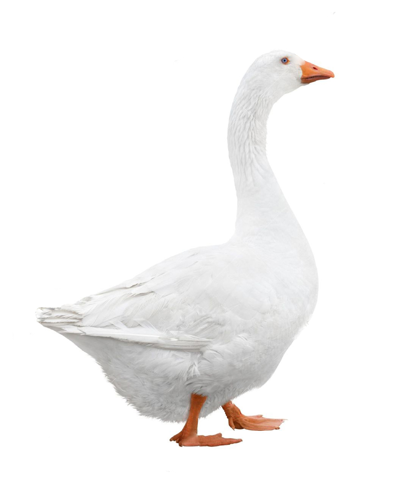

|

Харли (Евлампий Харлампиевич) - Катькин белый гусь и талисман сыщиков. В его честь сыщики и решили назвать свое агентство "Белый Гусь". Как и всякий гусь, Харли - птица важная и солидная. Поначалу даже отказывался реагировать на кого-либо, если к нему не обращались по имени-отчеству. Но потом близняшки "убедили" его, что Евлампий Харлампиевич - это конечно солидно, но если надо звать на помощь, надо бы придумать что-нибуть покороче. Поэтому Евлампий Харлампиевич в конце концов согласился сократить себя до Харли, в честь мотоцикла Harley-Davidson. С сыщиками у гуся отношения в основном хорошие. К хозяйке Катьке, Харли привязался из благодарности, поскольку малая не позволила ему стать рождественским ужином на столе у семейства Тихоновых. С близняшками он просто дружен - все-таки нечасто люди проявляют к гусям хоть какое-то уважение. Севку Харли уважает, поскольку тот умеет считать деньги, а Харли нет. Единственный, с кем у Евлампия Харлампиевича периодически возникают стычки - это шеф агентства Вадька. Причина банальна - никак не решат, кто же в доме Тихоновых хозяин. Вадька считает, что он, но у гуся на этот счет свое мнение - он ведь не мальчишка какой-нибуть, а гусь в полном расцвете своих гусиных сил! Вдобавок, Вадьку бесит, что Катька постоянно носится со своим гусем, вечно его хвалит, и даже умудряется нагло заявлять:"Ты, Вадька, у нас самый умный... после Евлампия Харлампиевича!" Хотя за порядком в агентстве гусь и правда следит неплохо, и если что - может и клювом долбануть, причем исключений не делается ни для кого. |